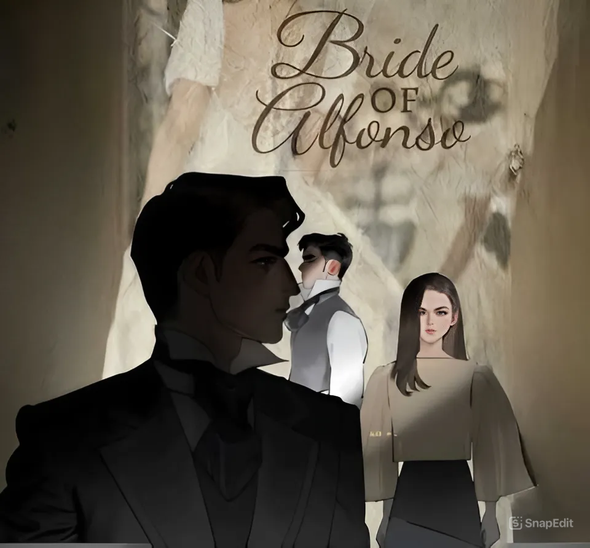

Bride of Alfonso
The History, Triumph and the Rise and Fall of Alfonso Family
Prequel of "I love you since 1892"
Makatwiran at hindi nagpapatalo, lumaki si Estella na patuloy na umaasang makakatuluyan pa rin sila ni Enrique Alfonso,
ang batang nagpagaan ng kanyang loob labinglimang taon na ang nakakaraan at ni minsan ay hindi nawala ang kanyang paghanga at pagtingin sa
binata na siyang magiging susunod na gobernadorcillo ng bayan ng San Alfonso.
Ngunit tila gumuho ang kanyang mundo nang mapag-alaman na ipinagkasundo na ito sa ibang dalaga.
Desididong mapangasawa pa rin si Enrique,
Hiningi ni Estella ang tulong ni Lucas, ang pinsan ng binata.
Tulungan mo akong mapalapit kay Enrique,
Tulungan mo akong maging isang Alfonso
- Estella
"Isa kang Pambihirang Binibining,
kung ang lahat ng binibini ay tulad mo handang gawin
ang lahat para sa taong minamahal tiyak na walang luhaang ginoo ngayon"
- Lucas
"Ngunit, labag sakin prinsipyo ang pagtulong sa iyo
dahil hindi ako naniniwala sa pag-ibig"
- Lucas
"Paano kung hindi ka nya Maalala?" - Lucas
"I-ipaaalala ko pa rin" - Estella
"Paano kung hindi nya pa rin
maalala kahit anong gawin mo?" - Lucas
"Kung hindi na nya maalala, sisiguraduhin kong
gagawa nalng kami muli ng mga bagong alaala" - Estella
"Isa ka talgang pambihirang binibini" - Lucas
"Halos ganyan naman kayong lahat,
Ibig nyong maging Alfonso at maging ina ng bayang ito dahil
sa kapangyarihan at walang kamatayang impluwensya.
Paano mo mamahalin ang isang tao
ilang segundo mo lng nakausap? dahil ba
sa nagawa mo siyang hintayin ng matagal
kung kaya't masasabi mo nang mahal mo sya?"
- Lucas
"Kung hindi man kami ang para sa isa't isa
mas maluwag kong tatanggapin kung ang babaeng makakasama
niya habang buhay ay mahal sya hindi dahil sa kaylangan
nito ang impluwensya ng pamilya nila kundi dahil
handa nyang ialay ang buong puso nya"
- Estella
"Hindi nga tayo mag kaibigan ngunit kahit papaano ay naging magkakampi tayo, Kapanalig ang tawag don, Magkapanalig tayo." - Lucas
Sa paglipas ng panahon at sa mga sekretong kanyang matutuklasan,
handa pa rin ba si Estella na gawin ang lahat upang maikasal sa binatang matagal nang inaasam?
O katulad sa ihip ng hangin ay magbabago rin ang isinisigaw ng kanyang puso?